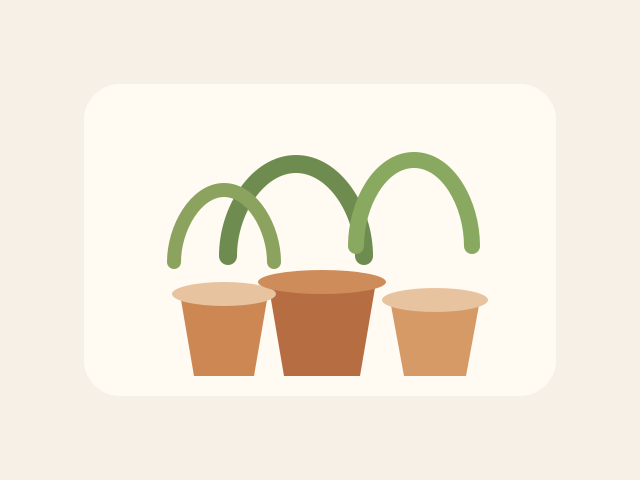

Packing
Moving Boxes
Mixed sizes, clean, and still sturdy. Good for books, kitchen items, or one more move.
gone_soon / give away free
Not everything needs a price. These are the items I would rather hand over quickly to someone who can use them.
Packing
Mixed sizes, clean, and still sturdy. Good for books, kitchen items, or one more move.

Plants
Several neutral ceramic pots in small and medium sizes. A few surface marks, no cracks.

Study Extras
A mixed stack of folders, sleeves, and a few old magazines. Useful for organizing papers or art scraps.